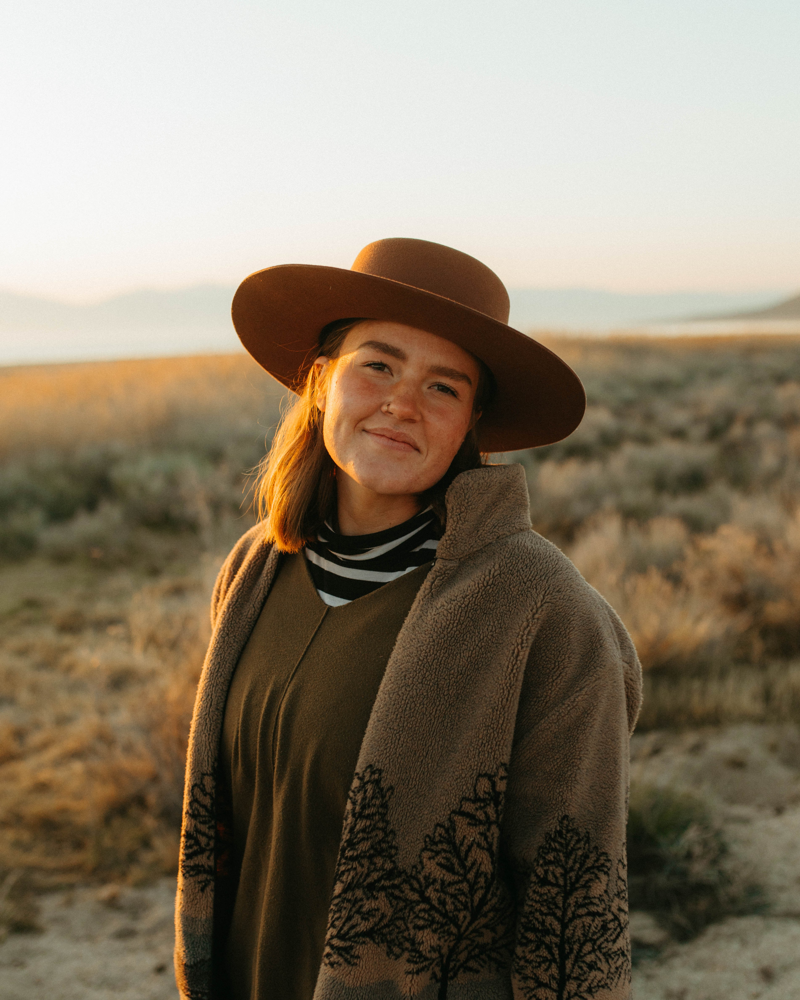
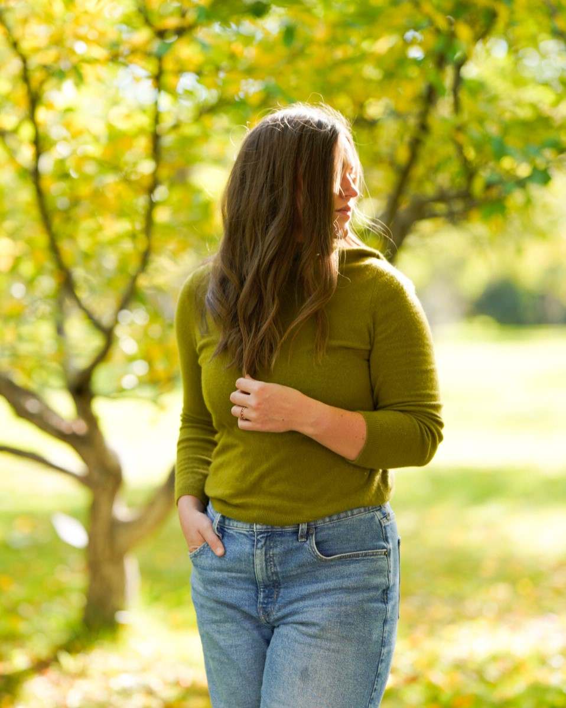
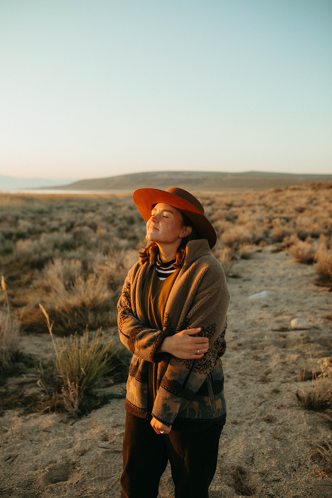

About Me
 Hi there!
My name is Lou – thanks for being here! I am a natural dye and botanical print artist based out of the beautiful state of Idaho. The slow, meticulous process of my creations opens my eyes to our earth’s beauty and balance.
My passion for sustainability, natural fibers, and non-toxic dyes on our clothing has blossomed in recent years. I find inspiration in the world around me and take counsel from established natural dye artists. Together we are creating waves of cascading change in the clothing industry.
I share an abundant life with my husband and our baby daughter. As a family, we enjoy hiking, rock climbing, cooking, and sharing meals outdoors. These things fill my soul to the brim!
I hope you’ll follow along on my journey of exploration and creation – maybe even be inspired to try your hand at discovering natural color right outside your door.
